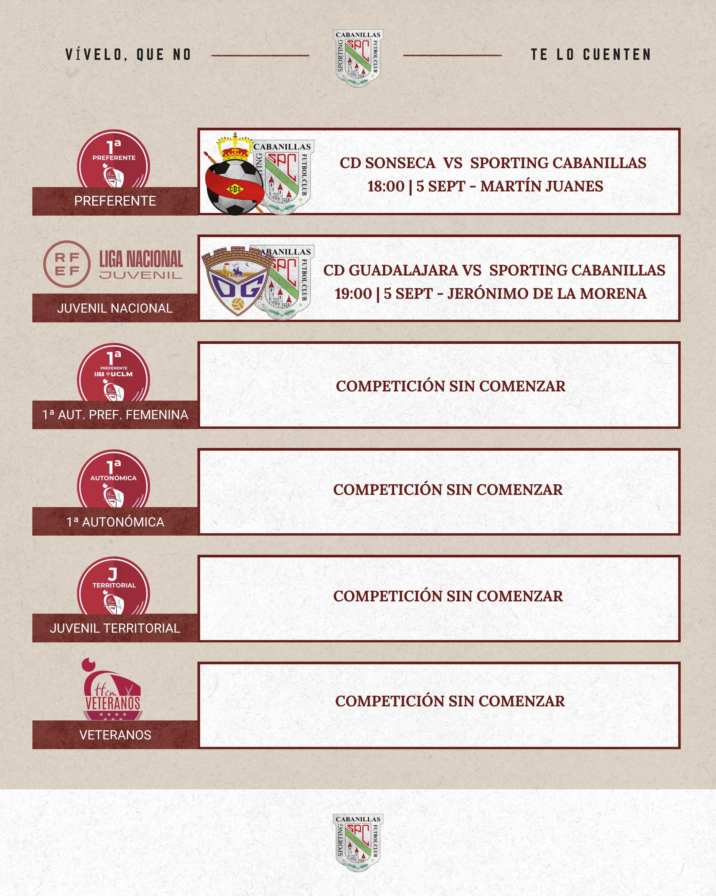

Temporada
Partidos
Consulta los partidos de esta jornada y sigue toda la actividad de nuestros equipos.
Esta jornada
Partidos del Sporting Cabanillas
Consulta aquí los partidos programados para esta jornada. La información semanal se actualiza a través de nuestras publicaciones en redes sociales.

Información oficial
Consulta todos los detalles
Para consultar calendarios completos, resultados, horarios y otros datos oficiales de las competiciones, puedes acceder directamente a la Federación de Fútbol de Castilla-La Mancha.
Sporting Cabanillas
Crecemos juntos
Empresas y marcas pueden formar parte del proyecto del club y acompañarnos durante toda la temporada.